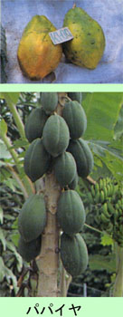

|
第３８ 加藤軍曹の死（少年通信兵出身）
 熟して落ちたヤシの実は、暫く日が経つと、中の甘い汁はなくなり、内側にある白いコプラもなくなり、ヤシの実の中は綿のように変 化し、丸い球状になっています。当時、我々はこれをヤシ綿と呼んでいました。このようになると、やがて新芽が出てきます。ヤシ綿は 食べると水分を含んでいて、柔らかくてうまい。我々は、敵機の襲撃を警戒しながら、ヤシ林のなかに、唯一の食べ物であるヤシ綿を探 しにいったものでした。一個のヤシ綿を食べたぐらいでは腹の足しにはならない。とはいっても、飢餓の苦しみを幾らか慰めてくれまし た。或る時、やっとのことで探し求めてきた貴重なヤシ綿を３個加藤軍曹に分けてやったことがありました。 勿論、彼の部下が分隊長の食事の面倒は見ていました。彼はマラリアに侵されて病床に伏したままでした。誰も見舞いには来ない。その 彼が余りにも哀れで不憫でならなかった。或る晩、病床に伏せていた加藤軍曹が『山口中尉殿、山口中尉殿、山口中尉殿』と、私の名前を呼び続けて、とうとう朝方に死んでし まった。恐らく『山口中尉殿』といわなくなった時が、加藤軍曹の最後だったのだろうと考えて居ます。薬もなく、衛生兵も居ない、そ んな中で死んでいった彼が余りにも不憫でした。私も切ない思いでした。 終戦後四十年も過ぎているのに、加藤軍曹が私の名前を呼び続けた、あの時の彼の臨終の事が忘れられません。今でも彼の顔を思い出 せるから不思議です。彼の永遠の命が私の脳裏に生きているのでしょうか。不思議な事だと思っています。 彼の遺体はジャングルの中に、手厚く葬ってやりました。彼の元所属、独立無線第八小隊長は、同僚の渡辺徹陸軍中尉でしたが、加藤 軍曹が死んだ時は、渡辺中尉は既にホーランジャに向かって転進して行ったと聞いていました。 ジャングルの下で、加藤軍曹の幕舎の中では、夜空にまばたく星も見られず、ロウソクの光も無かった。薄暗い部屋で、座ったり寝転 んだりしていた。ひもじいが食べ物はない。残酷で悲惨な戦場でした。 加藤軍曹の葬儀は私が取り仕切り、沢山の戦友に見守られて埋葬しました。この頃は、墓穴を掘って遺体を土葬するだけの体力が、ま だ、僅かに残っていました。加藤軍曹の埋葬が済んで、マダンの軍通信所を撤収し、ホーランジャに向け転進するようになってからは、 死んだら、ジャングルの中に放置され、誰も面倒を見ないし、独り静に天命を待つだけでした。天を恨む気力さえも、うせていた事と思 はれます。 退却途中の路傍には、至る所に、夥しい死体が放置されてあり、異臭を発して居ました。むごい最後です。既に風化してしまった白骨 もあった。水辺にやっとたどり着き、まさに死にそうな兵士が虚ろな目で天を恨んでいる様はげに哀れでした。彼等を救う手立ては無い のです。白骨になってしまった頭骸骨を見ると、お前も、とうとうニユーギニアの土になってしまったかと、祈らざるを得なかった。 薄暗いジャングルの中、マンゴウの木の下、水のある所の水辺、飛行機の機銃掃射でやられた貨物自動車の下、湿地帯の泥沼の両脇に ある藪の中、などなど至る所で、息を引き取り、餓死して行った。護国の鬼となった将兵の遺体が至る所にあり、むごたらしい、凄まじ い戦場を見ました。 東部ニユーギニア方面の戦場で、戦死した将兵は、実に１２万７千６百人に達したといはわれています。東京の千鳥ガ淵墓苑の碑文に は、はっきり、そう書いてあります。第十八軍（猛軍）の生還者は僅か一万百余人という記録があります。 |